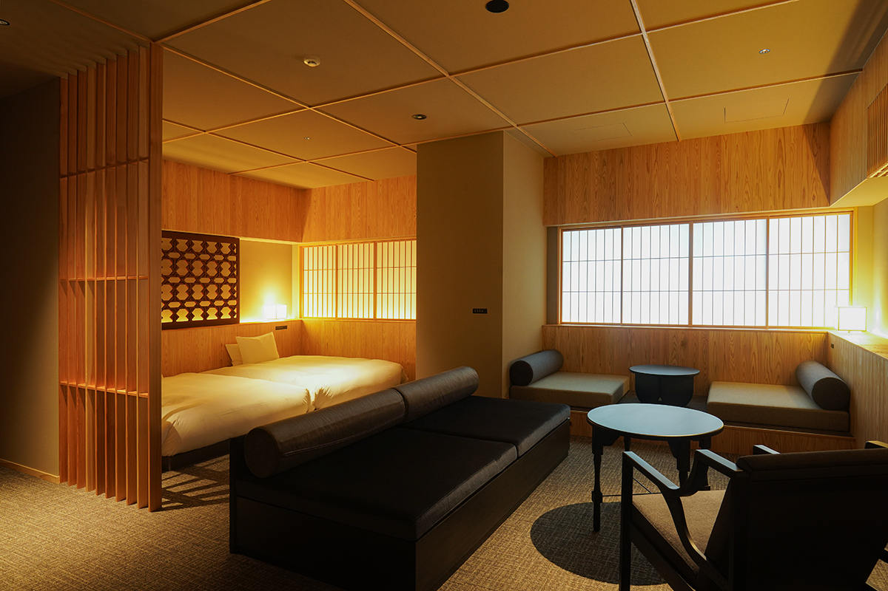
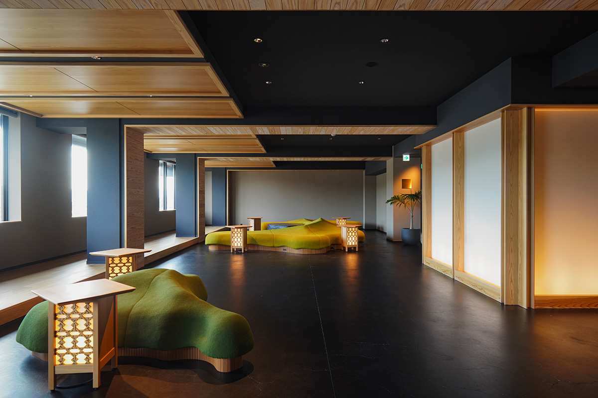
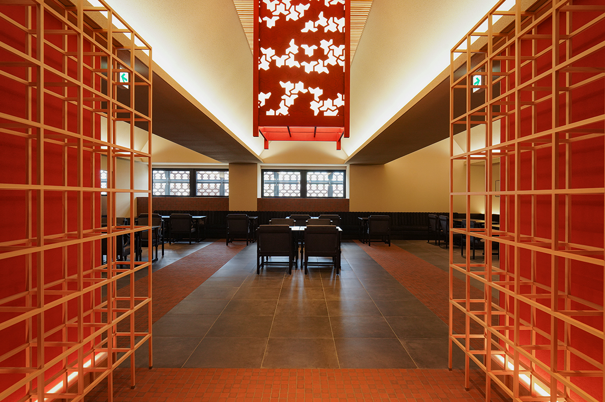
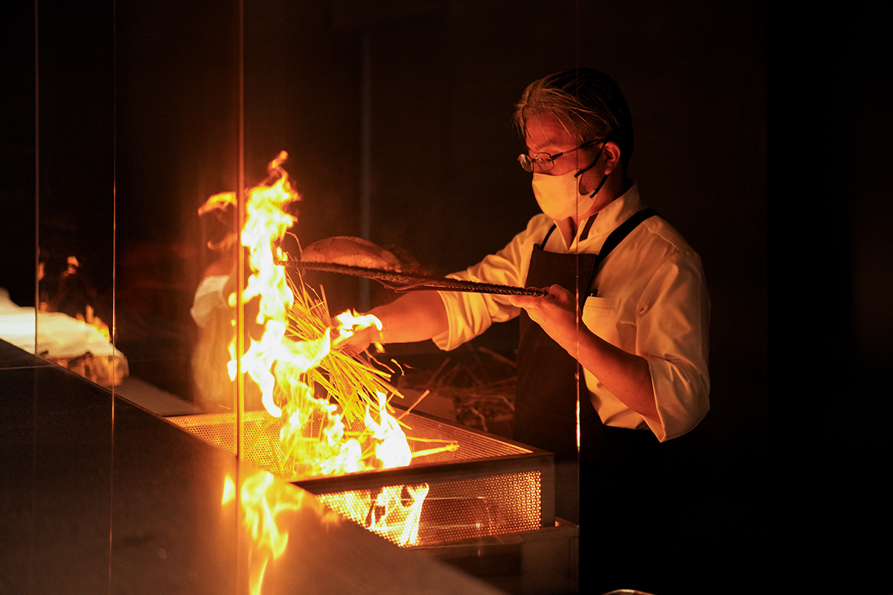
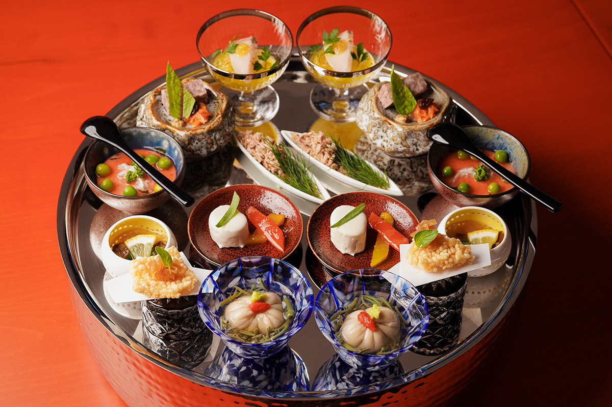
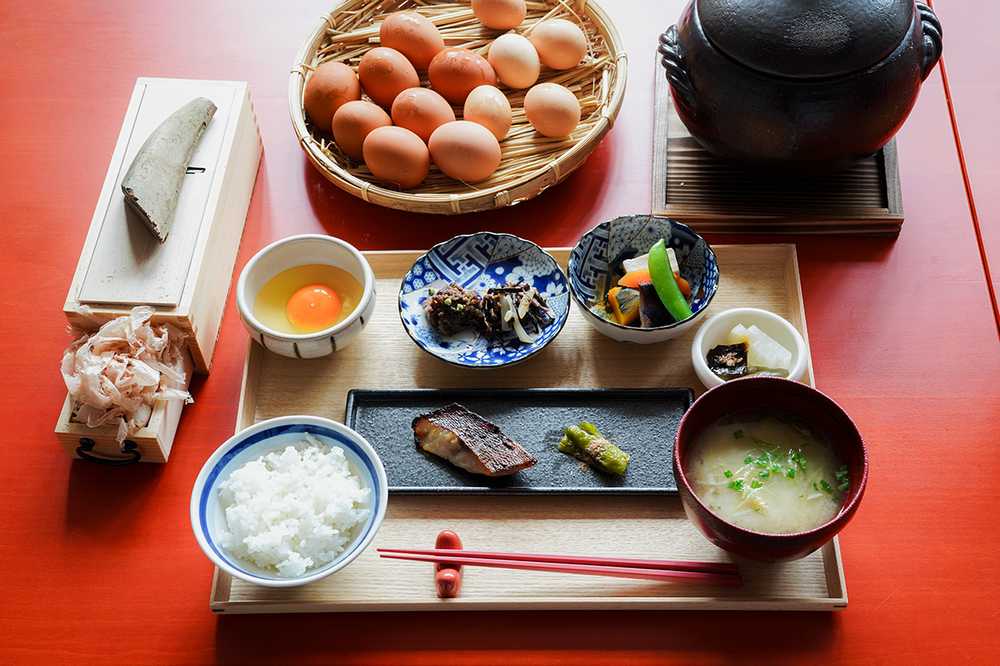
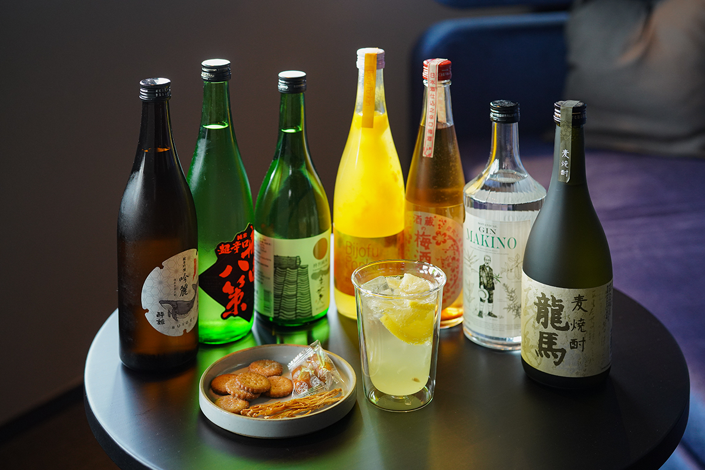
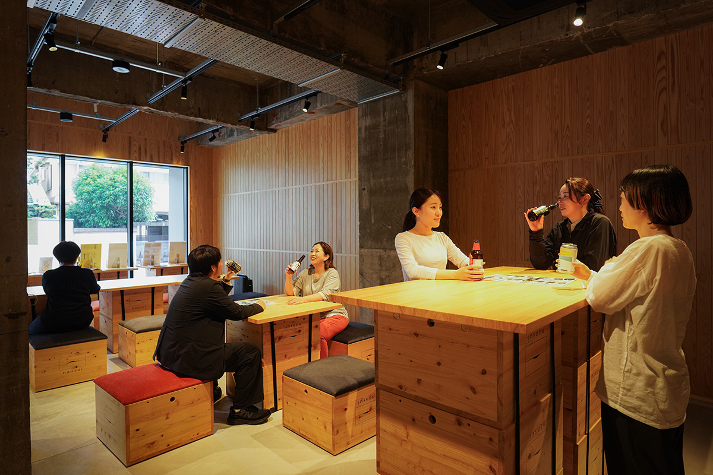
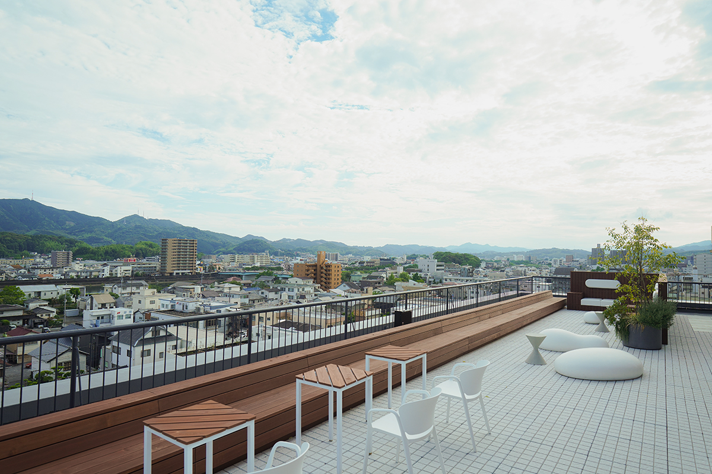

Префектура Коти · город Коти · отель
hotel nansui: ночь на родине Рёмы Сакамото

На месте, где когда-то стоял дом, в котором родился Рёма Сакамото, теперь открыт небольшой отель. Здесь соединили старую культуру Коти с современным искусством жить и назвали отдых «стиркой» для тела и души.
Отель
Новая жизнь старого дома
Больше пятидесяти лет в центре Коти работал отель, который любили горожане. В ноябре 2024 года он открылся заново уже как небольшой роскошный отель «hotel nansui». Оформление придумал архитектор, который учился у Хироси Найто, автора проектов станции Коти и музея Томитаро Макино (1862–1957), «отца японской ботаники».
Уже у входа начинается что-то вроде музея. В «Открытой галерее Рёмы» показывают копию старинной карты мира, которая повлияла на людей эпохи заката сёгуната: по ней можно представить, каким видел мир Рёма Сакамото (1836–1867), самурай из Тоса и один из главных деятелей движения против сёгуната Токугава, которого сегодня считают национальным героем Японии. На седьмом этаже, в холле, принимают гостей с видом на город, а перед ужином приглашают в бар за аперитивом. Напитки и закуски здесь входят в стоимость.

Ужин
Ресторан «MARGINAL»
В ресторане «MARGINAL» подают сезонный ужин из местных продуктов, не держась рамок одного стиля. Начало ужина это яркое ассорти «Восемь видов Тоса». Главное же зрелище происходит за стойкой: тунца кацуо жарят на открытом соломенном огне и подают тёплым, в двух видах, с солью и с соусом тартар.



Завтрак
Рис и два яйца
Завтрак здесь тоже событие. Рис варят в глиняном горшке к тому времени, на которое записался гость, а к нему подают два вида яиц. Сначала рис пробуют с солью, потом добавляют свежую стружку из сушёного бонито (кацуобуси) и смешанный соевый соус и получают лучшее в жизни блюдо из яйца и риса.

Бар и терраса
Всё включено
На седьмом этаже работает бар, где котийское сакэ, сётю и дзин, а также разливное пиво можно пить без ограничений. К напиткам подают местные закуски вроде печенья «мирэ-бисукэтто», а бокал можно унести и в номер, и на террасу на крыше.


На первом этаже, прямо у улицы, устроили свободное пространство «Окякуба». Оно открыто и для местных: здесь наливают крафтовое пиво со всей префектуры, подают закуски и проводят встречи. Так в отеле хотят показать ту самую котийскую культуру застолья, где за одним столом оказываются и путешественники, и горожане.

hotel nansui
- Адрес
- префектура Коти, город Коти, Камимати, 1-7-12
- Телефон
- +81 88-821-8895
- Номера
- 33
- Цены
- от 76 000 иен за ночь с завтраком (с налогом)
- Заезд
- 15:00
- Выезд
- 11:00
- Как добраться
- 15 минут на машине от разъезда Коти скоростной дороги Коти; 3 минуты пешком от остановки Камимати-иттёмэ линии Тосадэн
- Сайт
- hotelnansui.com
Фото: Адзуса Сигэнобу.